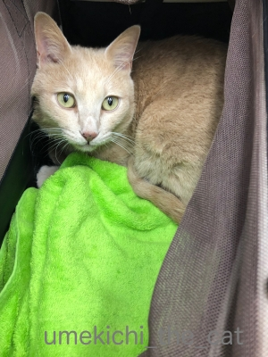
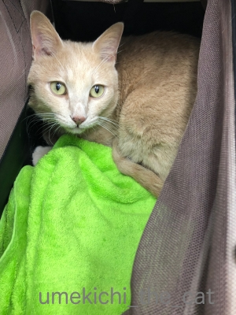
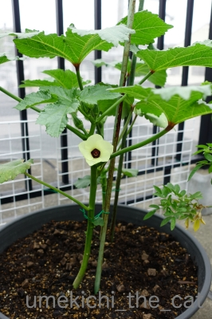
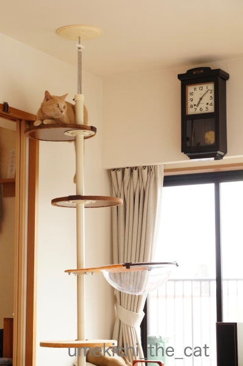
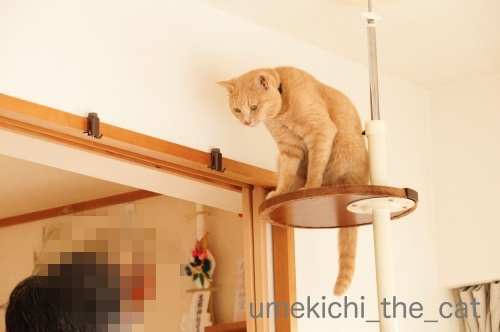
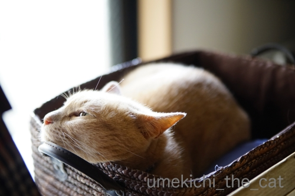
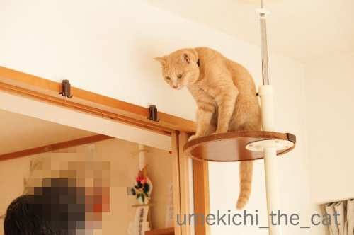
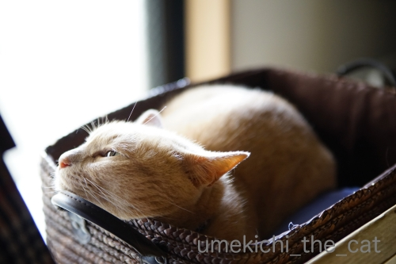

本物ねこじゃらし [梅吉]

梅吉さん、これはエノコログサと言ってですね、俗称猫じゃらしと呼ばれていて
お店で売ってる猫じゃらしはこれをモデルに・・・・・

と説明している側から食いつきます！
猫アターック！！

うふふ＾＾良いお顔ですねー0(≧▽≦)0
一連の出来事をgifでどうぞ。（無限ループです）

エノコログサ＝狗尾草（犬の尻尾の草）って書くの、知りませんでした(⌒-⌒;
梅吉の4回目のうちの子記念日へのたくさんのコメント本当にありがとうございましたm(_ _)m
同時に「コメレスごめんなさい」への温かいお言葉の数々もじっくり何度も読ませていただいて・・・
気持ちがふっと軽くなりました＾＾
ブログを通じての皆様とのおつきあい、楽しく長く続けて行けたら良いな
と改めて思った次第です(^_－)☆
感謝の気持ちを込めて「来年のうちの子記念日に」と考えていた
とびっきりの梅吉レア画像を！！
（おおさかねこネットのブログよりお借りしました）
きゃ〜〜〜〜〜〜〜っ0(≧▽≦)0
キトンブルーの梅吉です。
おたまじゃくしのしっぽみたいなのが笑えますwww
久しぶりのゼペットさん。
26日うちの子記念日祝いでバースデーケーキを頭に乗っけてたらお付き合いしてくれた方々が。
ありがとう！！

三美神！？marimoさんとリュカさんと。エフェクトかけてみたよーw
ちなみにちぃさんは左端です。イメチェンしたでしょ！？
女は変わるんですよ、ふふふふ(ΦωΦ)

ChatBleuさんも来てくれた＾＾

チャーさんとはハートマークで♡

くつしたにゃんさんとは
「来月でうちらまた一つおばちゃんになるんやなぁ。」とおばちゃんトーク！？
（誕生日が一緒なんです）
お付き合いしてくれた皆様、本当にありがとうございました＾＾
4回目のうちの子記念日＆ブログ3周年 [梅吉]
今日7月26日は梅吉の4回目のうちの子記念日です。
梅吉のはじめてのうちの子記念日にスタートした当ブログも丸３年が経ちました。
これからも当ブログと梅吉をどうぞよろしくお願い致しますm(_ _)m
我が家にやって来た日の写真。なんてあどけない！！
梅吉とはサイドバーにリンクを貼ってあるおおさかねこネットが主催する
保護猫の譲渡会で出会いました。
譲渡会に行く前に食べたラーメンの画像は残っているのに譲渡会の時の写真は一枚もなし(꒦ິ⌑꒦ີ)
当時ブログはしてなかったにしても運命の出会いの写真くらい撮っておけばよかったと後悔しきり。
そうしたらおおさかねこネットのブログでその時の様子がアップされているのを発見しました。
私たちが参加したのは19日。
場所は都島区。「としまく」ではありませんw「みやこじまく」。
当時、大阪にも「としまくがあるんだねっ」て言ったらおっとに笑われたw
ここは我が家から電車と地下鉄を乗り継いで行くところ。
今にして思えばよくわざわざ出向いたな、です。梅吉に呼ばれたのでしょうね＾＾
（おおさかねこネットのブログよりお借りしました）
じゃーん！譲渡会での梅吉（この時はまだ小太郎くん）。
これが記念すべき出会いの日でした。
このケージの中から梅吉が指に「鼻チュー」してきて、まんまと籠絡されましたよ、わたし(〃▽〃)
（おおさかねこネットのブログよりお借りしました）
里親さん宅での写真。
この距離感だと先住猫さんとも問題なく過ごせていた様子。
今、梅吉が他の猫を見ても全然動じないのはこの幼児体験のおかげかな。
先住猫さん＆里親さん優しかったんだろうな・・・ありがとうございます；；
そして更にちっこい梅吉の写真が！！

（おおさかねこネットのブログよりお借りしました）
おなかポンポコリン！お目目もキトンブルーに違いない！！
こんなに小さい梅吉の姿、感激です0(≧▽≦)0
実は小太郎時代の梅吉は病院の簡易検査で猫エイズ陽性判定が出ていたのです。
（おおさかねこネットのこちらとこちらの記事より。もちろん譲渡時に説明がありましたよ＾＾）
後の検査で陰性となりましたけど、陽性だったら譲渡会に出ることなく
この里親さんのおうちの子として暮らしていたのかも。
我が家にやって来て5日目。もうすっかり家族の一員でした。
さて、うちの子記念日前日の25日にフォトブック2018年版が出来上がりました。
表紙、どれがいいと思いますか？なんて皆さんにお聞きしましたが
なんとなんと候補に上がってなかったこの写真が表紙を飾ることにー！！
レイアウト作業中これが一番しっくり来たのです(^_－)☆
フォトブックも4冊目。歴代のフォトブックを並べてみた。

今年の「梅吉やで。」のタイトルのフォントが異様に大きい(ｰ ｰ;)
前年のフォントの大きさを確認せずに「こんな感じ？」と仮にしておいて
最終チェックをせずに発注してしまいました。
「うめきちやでーー！！」と大きな声で叫んでる感じで良いかしらね？ね？
2019年度版は来年のうちの子記念日の頃に作ります。
これからも面白可愛い画像の提供、お願いしますよ！梅吉さん！！

フォトブックを作るのに去年、今年と利用したのはマイブックです。
この時期はフォトブックを作ろうとする人が少ないのか40％オフで作ることができました。
2015、2016年はもうちょいお安いところを利用してたのですが
一度画質の良い方で作るともう後戻りはできないあるあるにハマるw
でも大満足の出来上がりでしたよー＾＾
追記：覚書
おおさかねこネット2015/07/13
おおさかねこネット2015/07/15
おおさかねこネット2015/07/19
おおさかねこネット2015/07/29
 ↑ガブッと一押し↑
↑ガブッと一押し↑
ーーーーーーーーーーーーお詫びとお知らせーーーーーーーーーーーーーーーー
皆様お気づきかと思いますが・・・
ここしばらく頂いたコメントのお返事を書いておりません。
私はどうにも手が遅いせいか頂いたコメントにお返事を書き、かつ
皆様のところにお邪魔してコメントを書いて・・・をしていると
あっという間に時間が過ぎてしまいます。
そこで大変心苦しいのですがコメントのお返事は失礼をする決断をしました。
頂いたコメントはおっと共々楽しく読ませていただいており時には食卓の話題になったりも。
楽しいコメント、本当に感謝をしております。
皆様のところににはこれまで以上に長文で暑苦しいコメントで遊びに伺いますねー！
この度のこと、
今後ブログを無理なく長く続けていくための選択と温かく受け止めていただけると幸いですm(_ _)m
ちぃ
梅吉のはじめてのうちの子記念日にスタートした当ブログも丸３年が経ちました。
これからも当ブログと梅吉をどうぞよろしくお願い致しますm(_ _)m
我が家にやって来た日の写真。なんてあどけない！！
梅吉とはサイドバーにリンクを貼ってあるおおさかねこネットが主催する
保護猫の譲渡会で出会いました。
譲渡会に行く前に食べたラーメンの画像は残っているのに譲渡会の時の写真は一枚もなし(꒦ິ⌑꒦ີ)
当時ブログはしてなかったにしても運命の出会いの写真くらい撮っておけばよかったと後悔しきり。
そうしたらおおさかねこネットのブログでその時の様子がアップされているのを発見しました。
私たちが参加したのは19日。
場所は都島区。「としまく」ではありませんw「みやこじまく」。
当時、大阪にも「としまくがあるんだねっ」て言ったらおっとに笑われたw
ここは我が家から電車と地下鉄を乗り継いで行くところ。
今にして思えばよくわざわざ出向いたな、です。梅吉に呼ばれたのでしょうね＾＾
（おおさかねこネットのブログよりお借りしました）
じゃーん！譲渡会での梅吉（この時はまだ小太郎くん）。
これが記念すべき出会いの日でした。
このケージの中から梅吉が指に「鼻チュー」してきて、まんまと籠絡されましたよ、わたし(〃▽〃)
（おおさかねこネットのブログよりお借りしました）
里親さん宅での写真。
この距離感だと先住猫さんとも問題なく過ごせていた様子。
今、梅吉が他の猫を見ても全然動じないのはこの幼児体験のおかげかな。
先住猫さん＆里親さん優しかったんだろうな・・・ありがとうございます；；
そして更にちっこい梅吉の写真が！！
（おおさかねこネットのブログよりお借りしました）
おなかポンポコリン！お目目もキトンブルーに違いない！！
こんなに小さい梅吉の姿、感激です0(≧▽≦)0
実は小太郎時代の梅吉は病院の簡易検査で猫エイズ陽性判定が出ていたのです。
（おおさかねこネットのこちらとこちらの記事より。もちろん譲渡時に説明がありましたよ＾＾）
後の検査で陰性となりましたけど、陽性だったら譲渡会に出ることなく
この里親さんのおうちの子として暮らしていたのかも。
我が家にやって来て5日目。もうすっかり家族の一員でした。
さて、うちの子記念日前日の25日にフォトブック2018年版が出来上がりました。
表紙、どれがいいと思いますか？なんて皆さんにお聞きしましたが
なんとなんと候補に上がってなかったこの写真が表紙を飾ることにー！！
レイアウト作業中これが一番しっくり来たのです(^_－)☆
フォトブックも4冊目。歴代のフォトブックを並べてみた。
今年の「梅吉やで。」のタイトルのフォントが異様に大きい(ｰ ｰ;)
前年のフォントの大きさを確認せずに「こんな感じ？」と仮にしておいて
最終チェックをせずに発注してしまいました。
「うめきちやでーー！！」と大きな声で叫んでる感じで良いかしらね？ね？
2019年度版は来年のうちの子記念日の頃に作ります。
これからも面白可愛い画像の提供、お願いしますよ！梅吉さん！！
フォトブックを作るのに去年、今年と利用したのはマイブックです。
この時期はフォトブックを作ろうとする人が少ないのか40％オフで作ることができました。
2015、2016年はもうちょいお安いところを利用してたのですが
一度画質の良い方で作るともう後戻りはできないあるあるにハマるw
でも大満足の出来上がりでしたよー＾＾
追記：覚書
おおさかねこネット2015/07/13
おおさかねこネット2015/07/15
おおさかねこネット2015/07/19
おおさかねこネット2015/07/29
ーーーーーーーーーーーーお詫びとお知らせーーーーーーーーーーーーーーーー
皆様お気づきかと思いますが・・・
ここしばらく頂いたコメントのお返事を書いておりません。
私はどうにも手が遅いせいか頂いたコメントにお返事を書き、かつ
皆様のところにお邪魔してコメントを書いて・・・をしていると
あっという間に時間が過ぎてしまいます。
そこで大変心苦しいのですがコメントのお返事は失礼をする決断をしました。
頂いたコメントはおっと共々楽しく読ませていただいており時には食卓の話題になったりも。
楽しいコメント、本当に感謝をしております。
皆様のところににはこれまで以上に長文で暑苦しいコメントで遊びに伺いますねー！
この度のこと、
今後ブログを無理なく長く続けていくための選択と温かく受け止めていただけると幸いですm(_ _)m
ちぃ
今週末はうちの子記念日！ [梅吉]
今日は超簡単更新ですm(_ _)m
梅吉はとっても元気ですよー。水分多めにとっておしっこも順調です。
そしてスペシャルご飯にご機嫌です。（トッピング程度に減らしてます）
蒸し暑いせいか寝てばっかりだけどwww
次回の更新は26日（金）予定！
7月26日はブログ開設３周年、梅吉4回目のうちの子記念日なのです。
次の記事の作業がしやすいようにリンク貼っておこう(*>艸<)
3回目うちの子記念日＆ブログ２周年
〜梅吉の里親さん宅での写真初公開！
2回目のうちの子記念日＆ブログ１周年
〜梅吉はうちの子じゃなかったかもしれない秘話！
初めてのうちの子記念日＆ブログ開設記事
初記事〜！・・・初記事ってなんだか恥ずかしいですね(〃▽〃)
ブログを始めるにあたり
梅吉はネタをたくさん提供してくれるだろうと睨んだ私の勘はただしかった（爆
タグ：もうすぐうちの子記念日
病院に行ってきました。 [梅吉]
昨日夕方梅吉の病院に行ってきました。

検査結果を待っている梅吉さん。
腎臓、心臓、膀胱のエコー検査と尿検査をしました。
エコー検査で結石は見られず尿中にそれをうかがわせる反応もなし。
潜血反応のみなので最初の見立て通りストレス性の軽度の膀胱炎と診断されました。
お薬を膀胱炎用のみにしてあと二週間薬を服用。
頻尿などの症状がでなければこの件は終了ということになりました。
お薬・・・パウチ食ウハウハ生活がもう少し続くんですよwww
それと水分を多めに取らせて、とのことなのでささみスープ。
真水を飲まなくなったらどうしよう(⌒-⌒;
![[猫]](https://blog.ss-blog.jp/_images_e/101.gif) このたおるは ちゅうちゅうたおると ちゃうねんな・・・
このたおるは ちゅうちゅうたおると ちゃうねんな・・・
ストレスの原因ははっきりしませんがとりあえず一過性の症状で一安心しました。
みなさま、ご心配をおかけしました。
ご報告までm(_ _)m

検査結果を待っている梅吉さん。
腎臓、心臓、膀胱のエコー検査と尿検査をしました。
エコー検査で結石は見られず尿中にそれをうかがわせる反応もなし。
潜血反応のみなので最初の見立て通りストレス性の軽度の膀胱炎と診断されました。
お薬を膀胱炎用のみにしてあと二週間薬を服用。
頻尿などの症状がでなければこの件は終了ということになりました。
お薬・・・パウチ食ウハウハ生活がもう少し続くんですよwww
それと水分を多めに取らせて、とのことなのでささみスープ。
真水を飲まなくなったらどうしよう(⌒-⌒;
ストレスの原因ははっきりしませんがとりあえず一過性の症状で一安心しました。
みなさま、ご心配をおかけしました。
ご報告までm(_ _)m
今年のベランダ栽培は豊作続き [梅吉]

オクラの一番花が咲いたのは6月23日のこと。
オクラの花かわいいでしょう＾＾
近所でもオクラを栽培しているお家をよく見かけます。
局地的に流行っている！？
初収穫は7月5日。
iPhone8Plusを比較のために置いてみました。
初収穫、ぴきぴきに新鮮なオクラちゃんです。立派なのが採れましたよ。
でもね、どうしてもしっぽの方が曲がった子に育ってしまう(ｰ ｰ;)
新鮮なので産毛の勢いがすごいです。気をつけないと手に刺さります。
食感を良くするためにも板ずりが必須。
（面倒な時は包丁の背でしごくだけでもOK!）
採りたては甘いんですよーとは言えないのがオクラちゃんw
でもスーパーでクタッとしたのを
緑のネットでごまかして売られているオクラとは全然違います。
パリパリっとした歯ざわりが気持ち良いです。
オクラが生えているところ。
その匂いを嗅ぐ梅吉さんw
柔らかめの棘があるので気をつけてくださいよ。

その梅吉ですがあの頻尿はなんだったの？というくらい落ち着いた状態。
お薬を止めた後再発するかも？と多少気がかりではありますが
19日、金曜日の受診は触診のみでおわりそうかな。
白ぱんつを盛大に披露しながら寛ぐの画。
びょういんは いかんでも ええんちゃう？
それはだめー！
苦い薬もパウチのフードに混ぜるとお皿まで食べそうな勢いで完食します。
パウチのフードの威力、おそるべし！！
皆様、たくさんのお見舞いコメントありがとうございましたm(_ _)m
オクラの一番花が咲いたのは6月23日のこと。
オクラの花かわいいでしょう＾＾
近所でもオクラを栽培しているお家をよく見かけます。
局地的に流行っている！？
初収穫は7月5日。
iPhone8Plusを比較のために置いてみました。
初収穫、ぴきぴきに新鮮なオクラちゃんです。立派なのが採れましたよ。
でもね、どうしてもしっぽの方が曲がった子に育ってしまう(ｰ ｰ;)
新鮮なので産毛の勢いがすごいです。気をつけないと手に刺さります。
食感を良くするためにも板ずりが必須。
（面倒な時は包丁の背でしごくだけでもOK!）
採りたては甘いんですよーとは言えないのがオクラちゃんw
でもスーパーでクタッとしたのを
緑のネットでごまかして売られているオクラとは全然違います。
パリパリっとした歯ざわりが気持ち良いです。
オクラが生えているところ。
その匂いを嗅ぐ梅吉さんw
柔らかめの棘があるので気をつけてくださいよ。
その梅吉ですがあの頻尿はなんだったの？というくらい落ち着いた状態。
お薬を止めた後再発するかも？と多少気がかりではありますが
19日、金曜日の受診は触診のみでおわりそうかな。
白ぱんつを盛大に披露しながら寛ぐの画。
それはだめー！
苦い薬もパウチのフードに混ぜるとお皿まで食べそうな勢いで完食します。
パウチのフードの威力、おそるべし！！
皆様、たくさんのお見舞いコメントありがとうございましたm(_ _)m
コロコロローラーで癒しの美活！？ [梅吉]
全身コロコロマッサージ for cat を買いました＾＾

まずはニオイを確認。

歯で確認も忘れませんよ。

お客様〜。
お仕事何かしら？腕の付け根あたりよくお使いになってるみたい。
お背中も凝ってるかしら?

がぶっ
でもお顔はまんざらでもないんですよ。
（16秒です＾＾）
最後の額リフトアップが美しさの秘訣？(*>艸<)
３連休明けのおっとの出張に便乗して旅行を計画していたのですが・・・
（以下覚書の経過なのでスルーしてください。結論として14日現在梅吉は元気です＾＾）
10日（水）の夕方から梅吉のトイレの様子が変。
いつもの量のおしっこをした後すぐにトイレに行って少量のおしっこ。
その後もなんどもトイレに行き数滴のおしっこを繰り返す。
先代猫の時になんども経験したトイレの異常。いやーな記憶が蘇ってきました。
頻尿は膀胱炎などの兆候の一つです。
動物病院に連絡を入れるにはもう遅い時間で翌日木曜日は病院の休診日。
幸いおしっこは出ているので様子見することにしました。
11日（木）
トイレに行く回数はますます増え梅吉も落ち着かない様子でウロウロしています。
おしっこは相変わらず出ているし色も正常。
（膀胱炎がひどくなるとファンタグレープみたいな色のおしっこが出ることがあります）
排泄時に痛がっている様子もなく食欲もあり遊ぶ気も満々。
知らない病院へ無理に連れて行くよりも家で安静と決断して様子見。
12日（金）朝からトイレは５〜6回。量は出ている。
朝一番で病院に電話をしてすぐに病院へ。
膀胱炎疑い？とのこと。
おしっこは出ているので投薬と水分を多めに取らせることにして様子見。
１w後に再診して改善がなければ検査しましょう
ただしおしっこが出なくなったらすぐに病院へ
ということになりました。
結石の場合の薬（抗生剤）と膀胱炎用の炎症止め両方の薬をもらい帰宅しました。
夕食時に投薬。夜のおしっこは定量と数分後の少量一回のみ。
13日（土）
一過性のもので症状が落ち着いたのか薬が効いたのか不明ながら
トイレの回数は少なくなり落ち着いた状態。
ささみスープで水分を多めに取らせたのでおしっこの量は多め。
ただ、処方された薬が気に入らないらしくささみに混ぜても食べなくなってしまった。
薬を舐めてみたらにがーいの。これはかわいそうだわ・・・
滅多に与えないたま伝やモンプチのパウチ高級食（笑）を買い出しに行く・・・
と、とても家を空ける心境＆状況ではなく旅行はキャンセルしました。
ホテルも梅吉のシッターさんもキャンセル料金が発生する前滑り込みセーフでキャンセル。
新幹線のチケットは払い戻し手数料が必要だったけど。
14日現在梅吉の症状は落ち着いています。
おしっこの量も正常です。
一過性のものだとすると原因はストレス？
思い当たるのは6月末から7月はじめにかけて
マンションの配管掃除やインターホン工事が重なったことくらい。
インターホンの呼び出し音を変えたことも原因の一つかもしれないと
呼び出し音は早速一番地味な音にして音量は小さくしました。
あとは普段通り家族で静かに過ごすことが一番かな・・・の３連休となりました。
寒い、暑いでも膀胱炎の兆候が出る事があるようです。
みなさんもお気をつけくださいね。
ちなみにコロコロローラー施術は症状の出る前の出来事です。
再診は19日。無事に無罪放免になるといいなぁ・・・

病院から帰宅後、たそがれる梅吉さんwww
まずはニオイを確認。
歯で確認も忘れませんよ。
お客様〜。
お仕事何かしら？腕の付け根あたりよくお使いになってるみたい。
お背中も凝ってるかしら?
でもお顔はまんざらでもないんですよ。
（16秒です＾＾）
最後の額リフトアップが美しさの秘訣？(*>艸<)
３連休明けのおっとの出張に便乗して旅行を計画していたのですが・・・
（以下覚書の経過なのでスルーしてください。結論として14日現在梅吉は元気です＾＾）
10日（水）の夕方から梅吉のトイレの様子が変。
いつもの量のおしっこをした後すぐにトイレに行って少量のおしっこ。
その後もなんどもトイレに行き数滴のおしっこを繰り返す。
先代猫の時になんども経験したトイレの異常。いやーな記憶が蘇ってきました。
頻尿は膀胱炎などの兆候の一つです。
動物病院に連絡を入れるにはもう遅い時間で翌日木曜日は病院の休診日。
幸いおしっこは出ているので様子見することにしました。
11日（木）
トイレに行く回数はますます増え梅吉も落ち着かない様子でウロウロしています。
おしっこは相変わらず出ているし色も正常。
（膀胱炎がひどくなるとファンタグレープみたいな色のおしっこが出ることがあります）
排泄時に痛がっている様子もなく食欲もあり遊ぶ気も満々。
知らない病院へ無理に連れて行くよりも家で安静と決断して様子見。
12日（金）朝からトイレは５〜6回。量は出ている。
朝一番で病院に電話をしてすぐに病院へ。
膀胱炎疑い？とのこと。
おしっこは出ているので投薬と水分を多めに取らせることにして様子見。
１w後に再診して改善がなければ検査しましょう
ただしおしっこが出なくなったらすぐに病院へ
ということになりました。
結石の場合の薬（抗生剤）と膀胱炎用の炎症止め両方の薬をもらい帰宅しました。
夕食時に投薬。夜のおしっこは定量と数分後の少量一回のみ。
13日（土）
一過性のもので症状が落ち着いたのか薬が効いたのか不明ながら
トイレの回数は少なくなり落ち着いた状態。
ささみスープで水分を多めに取らせたのでおしっこの量は多め。
ただ、処方された薬が気に入らないらしくささみに混ぜても食べなくなってしまった。
薬を舐めてみたらにがーいの。これはかわいそうだわ・・・
滅多に与えないたま伝やモンプチのパウチ高級食（笑）を買い出しに行く・・・
と、とても家を空ける心境＆状況ではなく旅行はキャンセルしました。
ホテルも梅吉のシッターさんもキャンセル料金が発生する前滑り込みセーフでキャンセル。
新幹線のチケットは払い戻し手数料が必要だったけど。
14日現在梅吉の症状は落ち着いています。
おしっこの量も正常です。
一過性のものだとすると原因はストレス？
思い当たるのは6月末から7月はじめにかけて
マンションの配管掃除やインターホン工事が重なったことくらい。
インターホンの呼び出し音を変えたことも原因の一つかもしれないと
呼び出し音は早速一番地味な音にして音量は小さくしました。
あとは普段通り家族で静かに過ごすことが一番かな・・・の３連休となりました。
寒い、暑いでも膀胱炎の兆候が出る事があるようです。
みなさんもお気をつけくださいね。
ちなみにコロコロローラー施術は症状の出る前の出来事です。
再診は19日。無事に無罪放免になるといいなぁ・・・
病院から帰宅後、たそがれる梅吉さんwww
またハードルが一つ下がる [梅吉]
製氷庫をガサガサすると梅吉が飛んでくる季節になりました。
幼い頃からなぜかこの音が好き。
氷で遊ばせてきたわけでもないのに。
あまりにキラキラのお目目で見上げてくるのに負けて初めてバスタブで遊ばせたのは去年の話。
今年はキッチンの床が解放されましたよw
（32秒です＾＾）
こてつくんのように華麗にドリブルする事はなく、
獲物を仕留めるようなハンティングスタイルです(*>艸<)
バスタブで遊ばせようかなぁと思いましたが
キッチンの床がびしょ濡れになったら拭けばいいのよね・・・
と私の中でまた一つ「猫様の為ならハードル」が下がった2019年の夏。

冷蔵庫の前にいればまた何か楽しい事、美味しいことが起こるんじゃないか・・・
と期待しておかーさんを見つめる梅吉さんwww
動画の中に梅シロップが写ってますがこれで十日目くらいです。
あと一週間くらいで飲めそうです＾＾
ーーーーーーーーーー拡散希望ーーーーーーーーーーーー
ぽちの輔さんのところで目にした多頭飼い無責任放置の末の惨状。
直リンクを貼ろうかと思いましたがあまりにショッキングな内容のため止めました。
まずぽちの輔さんの記事を読んで次に発信元のマリエさんの記事と段階を踏んでください。
覚悟が出来たら大元の記事。
私は大元の記事の一枚目の写真を見てそれ以上進めなくなりました。
ひどすぎて言葉が見つかりません・・・
一匹でも多くの子がきちんとした飼い主さんの元で暮らせるよう願います。
これも現実。
もう一度気持ちを強く持って大元の記事はちゃんと読もうと思ってます。
↑ガブッと一押し↑
幼い頃からなぜかこの音が好き。
氷で遊ばせてきたわけでもないのに。
あまりにキラキラのお目目で見上げてくるのに負けて初めてバスタブで遊ばせたのは去年の話。
今年はキッチンの床が解放されましたよw
（32秒です＾＾）
こてつくんのように華麗にドリブルする事はなく、
獲物を仕留めるようなハンティングスタイルです(*>艸<)
バスタブで遊ばせようかなぁと思いましたが
キッチンの床がびしょ濡れになったら拭けばいいのよね・・・
と私の中でまた一つ「猫様の為ならハードル」が下がった2019年の夏。
冷蔵庫の前にいればまた何か楽しい事、美味しいことが起こるんじゃないか・・・
と期待しておかーさんを見つめる梅吉さんwww
動画の中に梅シロップが写ってますがこれで十日目くらいです。
あと一週間くらいで飲めそうです＾＾
ーーーーーーーーーー拡散希望ーーーーーーーーーーーー
ぽちの輔さんのところで目にした多頭飼い無責任放置の末の惨状。
直リンクを貼ろうかと思いましたがあまりにショッキングな内容のため止めました。
まずぽちの輔さんの記事を読んで次に発信元のマリエさんの記事と段階を踏んでください。
覚悟が出来たら大元の記事。
私は大元の記事の一枚目の写真を見てそれ以上進めなくなりました。
ひどすぎて言葉が見つかりません・・・
一匹でも多くの子がきちんとした飼い主さんの元で暮らせるよう願います。
これも現実。
もう一度気持ちを強く持って大元の記事はちゃんと読もうと思ってます。
父と息子の話し合い [梅吉]

以前の記事で
ちょっとだけ触れたのですが・・・
キャットタワーのハンモック、
梅吉さんは相変わらず無関心w
そこで！秘策を！！
クリアハンモックを
真ん中付近に移動しました。
あ、それだけ？でしたか？(⌒-⌒;
そうしたら写真の通りの有様で。
クリアハンモックの時は
登る事も稀だったのに・・・
ハンモックのあった場所で
くつろぐ我が家の一人息子w

神妙な顔をしているのは

おとーさんに
「どーして梅吉はてっぺんにクリアハンモックがあるとガン無視だったのに
くどくどくどくどくどくど・・・・・・」と説得されているから。
息子は聞く耳持つんでしょうか。

このあと梅吉はこちらのベッドに移動www
クリアハンモックは深さがあるから入らないのか？とも思いましたが
このカゴも深さがあるので深さは関係ない模様です。
クリアハンモック、人事は尽くしたので天命を待つのみ！
数年後に「梅吉入りました！」なんて記事になるかもしれません。
その時うっすら思い出していただけると嬉しゅうございます(〃▽〃)

あにゃたは好きなところで好きなだけ寝てくださいませ。
↑ガブッと一押し↑
以前の記事で
ちょっとだけ触れたのですが・・・
キャットタワーのハンモック、
梅吉さんは相変わらず無関心w
そこで！秘策を！！
クリアハンモックを
真ん中付近に移動しました。
あ、それだけ？でしたか？(⌒-⌒;
そうしたら写真の通りの有様で。
クリアハンモックの時は
登る事も稀だったのに・・・
ハンモックのあった場所で
くつろぐ我が家の一人息子w
神妙な顔をしているのは

おとーさんに
「どーして梅吉はてっぺんにクリアハンモックがあるとガン無視だったのに
くどくどくどくどくどくど・・・・・・」と説得されているから。
息子は聞く耳持つんでしょうか。

このあと梅吉はこちらのベッドに移動www
クリアハンモックは深さがあるから入らないのか？とも思いましたが
このカゴも深さがあるので深さは関係ない模様です。
クリアハンモック、人事は尽くしたので天命を待つのみ！
数年後に「梅吉入りました！」なんて記事になるかもしれません。
その時うっすら思い出していただけると嬉しゅうございます(〃▽〃)
あにゃたは好きなところで好きなだけ寝てくださいませ。
手も出る、命令も出る [梅吉]
PCの後ろで寝ている梅吉さん。
退屈になると

お手手が伸びてきますよ。
あ、しかもダブルハンドなんて反則です0(≧▽≦)0

ぎゅ〜ん
もっと退屈になると画面クリーナーを狙ってきます。
えいっ！
猫ドリル？

ぶるるんっ

ちょっと弱いけど、猫ドリル認定いただけるでしょうか・・・

じーっと見つめ続けているのは
「しゃしゃっと うごかしてや」と下僕に命じていらっしゃるのです(⌒-⌒;
↑ガブッと一押し↑
退屈になると
お手手が伸びてきますよ。
あ、しかもダブルハンドなんて反則です0(≧▽≦)0
ぎゅ〜ん
もっと退屈になると画面クリーナーを狙ってきます。
猫ドリル？
ぶるるんっ
ちょっと弱いけど、猫ドリル認定いただけるでしょうか・・・
じーっと見つめ続けているのは
「しゃしゃっと うごかしてや」と下僕に命じていらっしゃるのです(⌒-⌒;
梅吉くんの、くんくんくんくん [梅吉]
いつもの場所で寝ていたのに
やおら立ち上がる！
（13秒です＾＾）
パン好きの梅吉、真顔でくんくんです(*>艸<)
で、梅吉がくんくんしていたのは
パンが角食ですがエッグベネディクトー！
すごいでしょ、頑張りましたよ＾＾
オランディーヌソースは前夜にホワイトアスパラを食べた時の残り物。
ホワイトアスパラ、関西ではなかなか手に入らないので買える時は大人買いしてますw
今年は二回に分けて食べました。
1回目はオリーブオイルをまぶして塩胡椒をしてグリル焼き。
グリーンのアスパラもそうですがこれが一番美味しいアスパラの食べ方だと思ってます。
栄養素も茹でる時よりも余すところなく摂取できる？
2回目はホワイトアスパラの食べ方の王道、柔らかく茹でてオランディーヌソースをかけました。
頑張ってソースを作ったので画像も載せて自慢しちゃおうw

ソースをちょっと煮詰め過ぎてしまって・・・
もう少しゆるっとアスパラにまとわせたかった。
でも味はサイコーに美味しかったです＾＾

〜補足〜
私が一人で食事をしている時は「ください、ください」がすごいのですが
（でもあげませんよw）
二人で食事をしていると黙って見ている梅吉です。
食事の時は食卓テーブルにも上がってきません。
食器を下げ始めると速攻で上がってきますけど(⌒-⌒;
『食べている時は絶対ダメ。』
やりたい放題の梅吉ですが一緒に暮らしていく上で
これだけは必要かなと覚えてもらいましたよ＾＾

カフェオレ色の梅吉

梅吉 2023年8月10日 永眠


梅吉と出会った譲渡会

犬猫の理由なき殺処分ゼロ
妄想広告
UMEKICHI 光

爆発的に早い！
時々攻撃的！
Thanks to Mr.Boss365
爆発的に早い！
時々攻撃的！
Thanks to Mr.Boss365